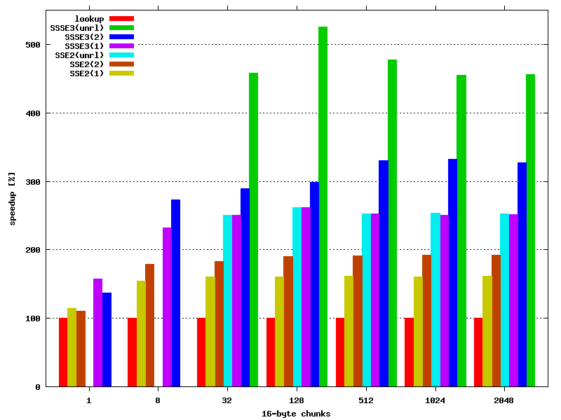

| Author: | Wojciech Muła |
|---|---|
| Added on: | 2008-05-24 |
| Last update: | 2017-01-28 (link to the XOP variant), 2016-11-27 (link to the paper) |
Contents
Population count is a procedure of counting number of ones in a bit string. Intel introduced instruction popcnt with SSE4.2 instruction set. The instruction operates on 32 or 64-bit words.
However SSSE3 has powerful instruction PSHUFB. This instruction can be used to perform a parallel 16-way lookup; LUT has 16 entries and is stored in an XMM register, indexes are 4 lower bits of each byte stored in another XMM register.
With help of PSHUFB we can get a vector that contains population count for 16 nibbles. To get a vector of population count for each 16 byte, instruction PSHUFB have to be called twice on vectors of lower and higher nibbles, and finally added together.
Following code shows the idea:
; xmm0 - input (16 bytes) ; xmm7 - POPCOUNT_4bit -- lookup table ; xmm6 - MASK_bits03 = packed_byte(0x0f) -- mask 4 lower bits movdqa %%xmm0, %%xmm1 psrlw $4, %%xmm1 pand %%xmm6, %%xmm0 ; xmm0 - lower nibbles pand %%xmm6, %%xmm1 ; xmm1 - higher nibbles movdqa %%xmm7, %%xmm2 ; since instruction pshufb modifies LUT movdqa %%xmm7, %%xmm3 ; it must be saved for further use pshufb %%xmm0, %%xmm2 ; xmm2 = vector of popcount for lower nibbles pshufb %%xmm1, %%xmm3 ; xmm3 = vector of popcount for higher nibbles paddb %%xmm3, %%xmm2 ; xmm2 += xmm3 -- vector of popcount for bytes
The last step is adding all bytes from vector.
Instruction PSADBW calculate sum of absolute differences of unsigned bytes — if the first arguments is full of zeros, then result is a sum of bytes from second argument. Unfortunately PSADBW invoked with 128-bits arguments calculate separate sums for bytes 0..7 and 8..15, and finally stores them in the lower and the higher quad words. Because of that few additional instructions are needed:
pxor %%xmm0, %%xmm0 ; xmm0 = packed_byte(0x00) psadbw %%xmm0, %%xmm3 ; xmm3 = [popcount of bytes 0..7 | popcount of bytes 8..15] movhlps %%xmm3, %%xmm0 ; xmm0 = [ 0 | popcount of bytes 0..7 ] paddd %%xmm3, %%xmm0 ; xmm0 = [ not needed | popcount of bytes 0..15]
PSADBW has 3 or 4 cycles latency, also additional instructions need some time to execute (I guess around 2 cycles).
PSADBW doesn't need to be called in every iteration — since max values of popcount for single byte is 8, we can perform up to floor(255/8)=31 parallel additions (PADDB) without overflow. Moreover, partial sums returned by PSADBW could be added together in the end.
Pseudocode:
pxor %%xmm5, %%xmm5 // global accumulator
while (bytes to end > 0) {
pxor %%xmm4, %%xmm4 // local accumulator (for inner loop)
n = min(bytes to end/16, 31) // up to 31 blocks
for (i=0; i < n; i++) {
// calculate xmm3, a vector of popcount for bytes
paddb %%xmm3, %%xmm4 // xmm4 += xmm3 -- update local acc.
}
pxor %%xmm0, %%xmm0
psadbw %%xmm4, %%xmm0 // xmm4 -- calculate two popcounts
// update global acc.
paddd %%xmm4, %%xmm5
}
// add halfs of global accumulator
movhlps %%xmm5, %%xmm0
paddd %%xmm5, %%xmm0
movd %%xmm0, %%eax // eax = population count for all bytes
Github repository contains the original code from 2008 and also the new C++11 (2015, 2016), intrinsics-based implementation.
Program from the repository were run with default settings (make run and make run_avx2) and repeated several times. Minimal measurements were considered.
Below is the list of procedures listed in here. The repository has more variants.
| procedure | implementation |
|---|---|
| lookup-8 | LUT-based procedure (uint8_t[266]) |
| lookup-64 | LUT-based procedure (uint8_t[266]), avoid zero-extend |
| bit-parallel | well know method, described for example in Bit Twiddling Hacks |
| bit-parallel-optimized | above + the trick from section "Further improvements" |
| harley-seal | Harley-Seal variant |
| sse-bit-parallel | SSE variant of bit-parallel |
| sse-lookup | the method described in this text using SSE instructions |
| sse-lookup | the method described in this text using AVX2 instructions |
| cpu | popcnt instruction emitted via intrinsic |
The CPU architecture: Core i5 M540 @ 2.53GHz (Westmere)
More details in a separate file.
| procedure | 32 B | 64 B | 128 B | 256 B | 512 B | 1024 B | 2048 B | 4094 B |
|---|---|---|---|---|---|---|---|---|
| lookup-8 | 2.29884 | 2.20039 | 2.15086 | 2.12830 | 3.40985 | 3.38632 | 3.37334 | 3.36643 |
| lookup-64 | 2.29837 | 2.19979 | 2.15067 | 2.12608 | 3.40112 | 3.38135 | 3.37165 | 3.36490 |
| bit-parallel | 2.13645 | 2.00652 | 1.93406 | 1.90567 | 3.01241 | 2.99661 | 2.99112 | 2.99828 |
| bit-parallel-optimized | 1.37812 | 1.23970 | 1.16183 | 1.13877 | 1.79016 | 1.77086 | 1.75989 | 1.78260 |
| harley-seal | 1.47658 | 1.29922 | 0.79424 | 0.63432 | 0.90197 | 0.86194 | 0.83491 | 0.85399 |
| sse-bit-parallel | 2.69418 | 2.40001 | 1.40793 | 0.95652 | 1.17003 | 1.00129 | 0.92382 | 0.86693 |
| sse-lookup | 0.75528 | 0.54195 | 0.34942 | 0.31078 | 0.47211 | 0.45694 | 0.44650 | 0.46007 |
| cpu | 0.49283 | 0.37799 | 0.32058 | 0.29185 | 0.44360 | 0.43213 | 0.42637 | 0.36332 |
CPU popcnt outperforms the code described here.
The CPU architecture: Haswell i7-4770 CPU @ 3.40GHz.
More details in a separate file.
| procedure | 32 B | 64 B | 128 B | 256 B | 512 B | 1024 B | 2048 B | 4094 B |
|---|---|---|---|---|---|---|---|---|
| lookup-8 | 1.20408 | 1.10938 | 1.06312 | 1.10722 | 1.69922 | 1.66315 | 1.64113 | 1.63397 |
| lookup-64 | 1.17775 | 1.09994 | 1.06374 | 1.09102 | 1.67579 | 1.64548 | 1.62390 | 1.61094 |
| bit-parallel | 1.26768 | 1.10553 | 1.05222 | 1.02626 | 1.62086 | 1.61024 | 1.60495 | 1.61435 |
| bit-parallel-optimized | 1.00233 | 0.82545 | 0.72246 | 0.67454 | 1.04113 | 1.02366 | 1.01708 | 1.03801 |
| harley-seal | 1.00260 | 0.79597 | 0.50116 | 0.39440 | 0.54553 | 0.50277 | 0.48139 | 0.48978 |
| sse-bit-parallel | 2.15206 | 2.02008 | 1.09393 | 0.66777 | 0.75717 | 0.61179 | 0.53791 | 0.49923 |
| sse-lookup | 0.53520 | 0.33902 | 0.21379 | 0.18061 | 0.26688 | 0.25605 | 0.25054 | 0.25780 |
| avx2-lookup | 0.53068 | 0.33920 | 0.21373 | 0.13579 | 0.17133 | 0.15500 | 0.14293 | 0.17005 |
| cpu | 0.29480 | 0.24051 | 0.15478 | 0.13270 | 0.20052 | 0.19462 | 0.20843 | 0.21684 |
AVX2 code is faster than the dedicated instruction for input size 512 bytes and larger.
The CPU architecture: Skylake i7-6700 CPU @ 3.40GHz
More details in a separate file.
| procedure | 32 B | 64 B | 128 B | 256 B | 512 B | 1024 B | 2048 B | 4094 B |
|---|---|---|---|---|---|---|---|---|
| lookup-8 | 1.02956 | 0.94836 | 1.04671 | 0.95623 | 1.46018 | 1.42373 | 1.40633 | 1.39675 |
| lookup-64 | 1.00704 | 0.94387 | 1.03233 | 0.94744 | 1.45629 | 1.42371 | 1.40747 | 1.39947 |
| bit-parallel | 1.05662 | 0.95297 | 0.90992 | 0.88908 | 1.40587 | 1.39753 | 1.39337 | 1.41585 |
| bit-parallel-optimized | 0.81278 | 0.69091 | 0.63329 | 0.60453 | 0.94443 | 0.93320 | 0.92760 | 0.95122 |
| harley-seal | 0.81283 | 0.66397 | 0.43348 | 0.34035 | 0.46871 | 0.43077 | 0.41181 | 0.41767 |
| sse-bit-parallel | 2.25432 | 1.70980 | 0.92443 | 0.57618 | 0.68189 | 0.58220 | 0.50169 | 0.45568 |
| sse-lookup | 0.40749 | 0.29802 | 0.18290 | 0.15742 | 0.23956 | 0.23057 | 0.22657 | 0.23177 |
| avx2-lookup | 0.43350 | 0.26368 | 0.17950 | 0.11587 | 0.14881 | 0.13729 | 0.12798 | 0.14222 |
| cpu | 0.21676 | 0.16256 | 0.13546 | 0.12192 | 0.18423 | 0.22065 | 0.19643 | 0.20293 |
Again AVX2 code is faster than the dedicated instruction for input size 256 bytes and larger.
Note 2016-03-13: this section refers to results from 2008.
ssse3_popcount.c is a test program that contains implementations of following procedures:
The first argument of the program is a function name, the second is the number of 16-byte chunks processed by the selected procedure in one iteration and the third is the iterations number.
The table shows results for different chunk count; test script I've used is available. Program was compiled with following options:
gcc -O2 -DALIGN_DATA ssse3_popcount.c -o ssse3_popcount
Tests were run on my Linux box, with Core 2 Duo E8200;
Results clearly show, that the method presented above brings significant speedup, which depends on the data size.
The straightforward SSSE3 implementation is 2-2.8 times faster, the improved around 3 times, and the unrolled 4-5 times.
| procedure | number of 16-byte chunks | iterations | time [s] | speedup |
|---|---|---|---|---|
| lookup | 1 | 20,000,000 | 0.22 | 100% |
| sse2-1 | 0.19 | 115% | ||
| sse2-2 | 0.20 | 110% | ||
| ssse3-1 | 0.14 | 157% | ||
| ssse3-2 | 0.16 | 137% | ||
| lookup | 8 | 20,000,000 | 1.42 | 100% |
| sse2-1 | 0.92 | 154% | ||
| sse2-2 | 0.79 | 179% | ||
| ssse3-1 | 0.61 | 232% | ||
| ssse3-2 | 0.52 | 273% | ||
| lookup | 32 | 2,000,000 | 0.55 | 100% |
| sse2-1 | 0.34 | 161% | ||
| sse2-2 | 0.30 | 183% | ||
| sse2-unrl | 0.22 | 250% | ||
| ssse3-1 | 0.22 | 250% | ||
| ssse3-2 | 0.19 | 289% | ||
| ssse3-unrl | 0.12 | 458% | ||
| lookup | 128 | 200,000 | 0.21 | 100% |
| sse2-1 | 0.13 | 161% | ||
| sse2-2 | 0.11 | 190% | ||
| sse2-unrl | 0.08 | 262% | ||
| ssse3-1 | 0.08 | 262% | ||
| ssse3-2 | 0.07 | 299% | ||
| ssse3-unrl | 0.04 | 525% | ||
| lookup | 512 | 200,000 | 0.86 | 100% |
| sse2-1 | 0.53 | 162% | ||
| sse2-2 | 0.45 | 191% | ||
| sse2-unrl | 0.34 | 252% | ||
| ssse3-1 | 0.34 | 252% | ||
| ssse3-2 | 0.26 | 330% | ||
| ssse3-unrl | 0.18 | 477% | ||
| lookup | 1024 | 200,000 | 1.73 | 100% |
| sse2-1 | 1.07 | 161% | ||
| sse2-2 | 0.90 | 192% | ||
| sse2-unrl | 0.68 | 254% | ||
| ssse3-1 | 0.69 | 250% | ||
| ssse3-2 | 0.52 | 332% | ||
| ssse3-unrl | 0.38 | 455% | ||
| lookup | 2048 | 200,000 | 3.47 | 100% |
| sse2-1 | 2.14 | 162% | ||
| sse2-2 | 1.80 | 192% | ||
| sse2-unrl | 1.37 | 253% | ||
| ssse3-1 | 1.38 | 251% | ||
| ssse3-2 | 1.06 | 327% | ||
| ssse3-unrl | 0.76 | 456% |
Daniel Lemire has gave me access to computers with Haswell and Skylake processors, thanks to that I could play with AVX2 code and run tests. Kim Walisch contributed the Harley-Seal implementation. There were some fixes and enhancements to sample code by various people. Thank you.
Paper by Daniel Lemire, Nathan Kurz and me: Faster Population Counts using AVX2 Instructions.
Speeding up bit-parallel population count — delaying byte-wise sum (the trick with PSADBW) applied for bit parallel method gives 50% speedup over plain, SWAR 64-bit procedure.
Anatomy of High-Performance 2D Similarity Calculations — paper contains interesting comparison of similarity calculations which heavily use popcount operation. The authors compared 4 basic methods: 1) hardware-based, i.e. popcnt instruction, 2) simple LUT, 3) bit-level parallel method (SSE2 procedure), and 4) the method described here. The most important observation, from my point of view of course, is that the speed of SSSE3 code is comparable to hardware popcnt, it is just a bit slower.
The authors published also the full source code and I noticed they manually unrolled inner loop. I did the same in my code and speedup increased from 3 to 4-5 — sources and article has been updated.
Benchmarking CRC32 and PopCnt instructions — Peter Kankowski compared speed of SSE4.2 instructions crc32 and popcnt against software implementations. Hardware CRC32 is significantly faster, but population count is slightly slower than the algorithm presented here